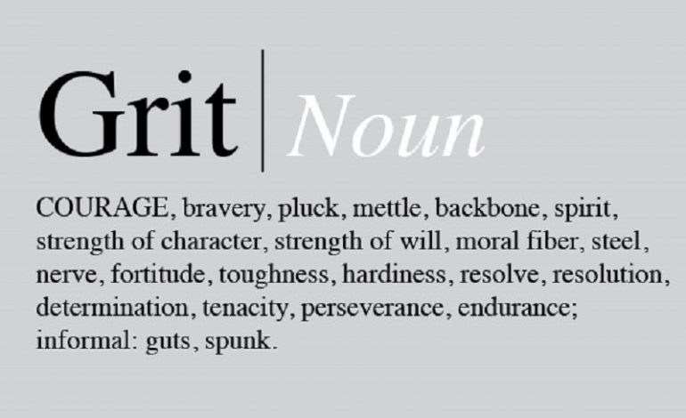
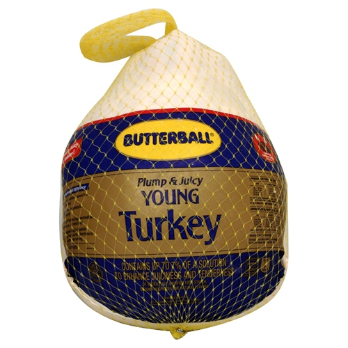
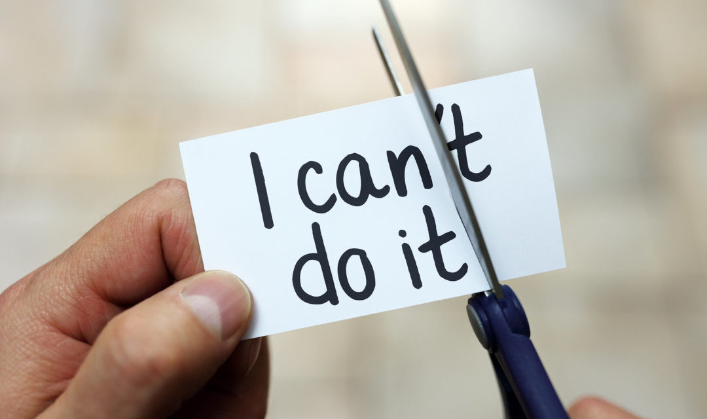
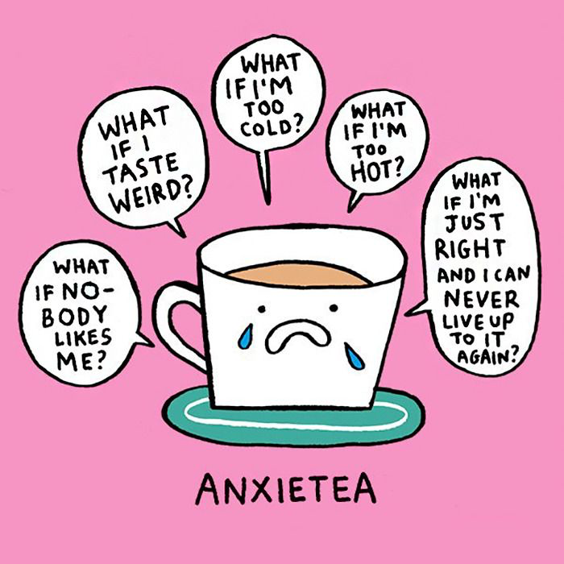
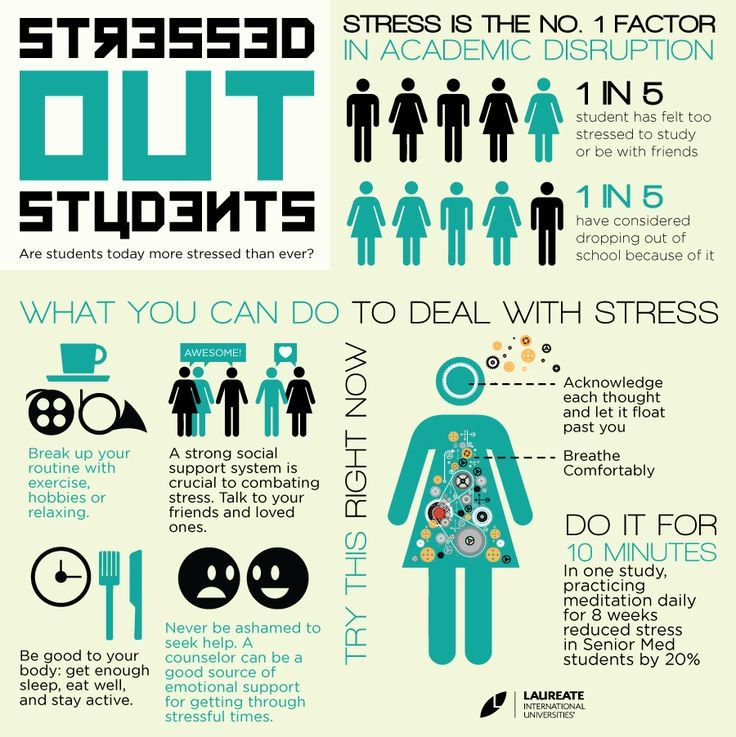
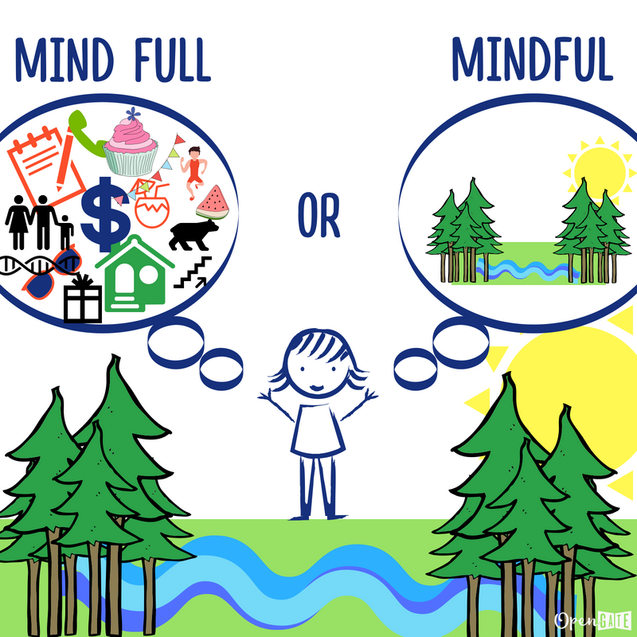

Module 5: Self-Advocacy and Relationship Management in Learning
5.1 Building Resiliency
- Assessment vs. Evaluation
- What is “grit”?
- Anxiety and mindfulness

Have you noticed that some people can rise above difficult situations and come out stronger while other people seem to be overwhelmed under any amount of stress? Have you observed people in your life develop a great work ethic despite limitations? Have you ever wondered what made some people able to have this courage and strength and how you can develop this in yourself? Read on to learn more about resiliency!
Grit
Learn about what grit is and how you can develop this powerful trait by watching this video called “Grit: The Power and Passion of Perseverance”.
Grit: The Power and Passion of Perseverance
Frozen Turkeys and Resiliency

Check out this inspiring story about someone who showed amazing resiliency! As you read, reflect on your own level of resiliency. You will be choosing one of the suggestions in this article to implement into your own life to build resiliency.
“Victoria Ruvolo was driving home from a niece’s piano recital one wintery evening in 2004 when a large object smashed through her windshield, hitting with such force that it broke every bone in her face. The object turned out to be a frozen turkey. The thrower: a teenage boy named Ryan Cushing, out for a joyride with friends in a stolen car. Ruvolo’s passenger managed to grab the steering wheel, push Ruvolo’s foot off the gas pedal and steer them onto the shoulder. After being rushed to the hospital, Ruvolo remained in an induced coma for two weeks.
When it was safe to operate, the doctors began painstakingly putting Ruvolo back together. The then-44-year-old office manager from Long Island was left with three titanium plates in her left cheek, one plate in her right cheek, and a screen holding her left eye in place. Her family was told that she might have permanent brain damage and was unlikely to be capable of living on her own.
But that wasn’t a prediction Ruvolo was ready to accept. She had survived tragedies before. Two of her brothers died in separate incidents when she was a teenager. At age 35 she miscarried a much-longed-for child. Somehow, she had found the strength to come through those losses, and she was determined that she would make it through this one, too.”
Continue reading the remainder of the article by following this link

- Pump Up Your Positivity
- Live to Learn
- Open Your Heart
- Take Care of Yourself
- Hang on to Humor
Anxiety and Mindfulness
“Anxiety is your body’s natural response to stress. It’s a feeling of fear or apprehension about what’s to come. The first day of school, going to a job interview, or giving a speech may cause most people to feel fearful and nervous.” Source:https://www.healthline.com/health/anxiety)

As stated in the quote above, anxiety is a natural response of our body. It is what has helped us survive as a species! It motivates us to action and helps us get things done. Each of us has different triggers when it comes to anxiety. We also all have different strategies for managing our anxiety. What works for one person may not work for another. It’s not one size fits all! We are most successful when we find strategies that work for us personally. It should be noted though, that when anxiety begins to impede our ability to accomplish tasks or feel happiness, we should find help. If you are feeling like the strategies in this course are not helping, please talk to a trusted adult such as a parent, teacher, or counsellor to find help. Take care of yourself.
Read this article called 50 Strategies to Beat Anxiety that gives a variety of strategies to manage your anxiety in healthy ways.
Check out this amazing resource! Browse through this Anxiety Canada website specifically for youth.

Mindfulness

“Mindfulness is the psychological process of bringing one's attention to experiences occurring in the present moment, which one can develop through the practice of meditation and through other training.” (Source: https://en.wikipedia.org/wiki/Mindfulness)
“Research indicates that when teens consistently practice mindfulness, it lowers rates of anxiety and depression, and leads to better sleep, stronger relationships, and increased self-awareness, all of which can go a long way toward ameliorating the impact of stress.” (Source:https://leftbrainbuddha.com/mindfulness-for-teens/) Image source: http://manyopengates.com/how-to-be-mindful-with-a-mind-full-of-thoughts/)
Watch this video where teens like you discuss their experiences with mindfulness.
“Mindfulness: Youth Voices”
One way to practice mindfulness is to do daily meditation. There are so many meditations available online to try out. Below is a link to one such meditation. Give it a try! Pay attention to the way you feel before and after the meditation. Try and have an open mind to see if this is something that could help you relax, manage stress and give you confidence. You will record these thoughts in your answer booklet.